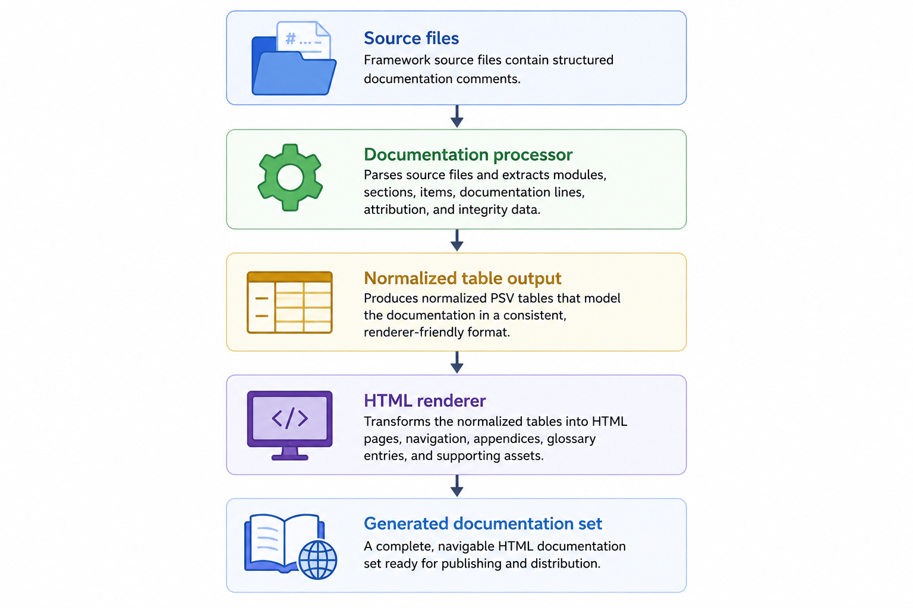

The documentation pipeline consists of several stages.

The processor reads source files and extracts module metadata, sections, items, documentation lines, attribution data, and integrity information.
The renderer receives the normalized tables produced by the processor and turns them into HTML pages, navigation, appendices, glossary entries, and supporting assets.
The generator coordinates the overall process and acts as the main entry point for producing the documentation set.
Four generation modes are available:
Full generation cleans the output directory before rebuilding the complete set. Selected and Changed generation preserve existing output so they can be used for incremental updates. Successful parse modes persist the normalized renderer input data, allowing Render existing data mode to regenerate HTML, navigation, CSS, branding, and other renderer-owned output without rescanning source files.
After files or modules are renamed or removed, use Full generation so obsolete generated pages are deleted rather than surviving from an earlier documentation run. Render existing data does not re-read source comments or metadata.